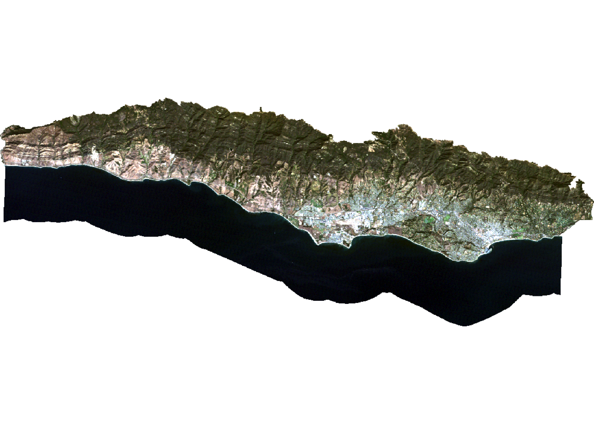

# Load libraries
library(sf) # vector data
library(terra) # raster data
library(here) # file path management
library(tidyverse)
library(rpart) # recursive partitioning and regression trees
library(rpart.plot) # plotting for rpart
library(tmap) # map makingLandcover Classification
Using a decision tree classifier to create a land cover classification for southern Santa Barbara County
Background
Monitoring the distribution and change in land cover types can help us understand the impacts of phenomena like climate change, natural disasters, deforestation, and urbanization. Determining land cover types over large areas is a major application of remote sensing because we are able to distinguish different materials based on their spectral reflectance.
Classifying remotely sensed imagery into land cover classes enables us to understand the distribution and change in land cover types over large areas.
There are many approaches for performing land cover classification:
- Supervised approaches use training data labeled by the user
- Unsupervised approaches use algorithms to create groups which are identified by the user afterward
Task
In this analysis, I am using a form of supervised classification – a decision tree classifier.
Decision trees classify pixels using a series of conditions based on values in spectral bands. These conditions (or decisions) are developed based on training data.
I use the decision tree to create a land cover classification for southern Santa Barbara County based on multi-spectral imagery and data on the location of 4 land cover types:
- green vegetation
- dry grass or soil
- urban
- water
To do so, I will:
- Load and process Landsat scene
- Crop and mask Landsat data to study area
- Extract spectral data at training sites
- Train and apply decision tree classifier
- Plot results
Data
Landsat 5 Thematic Mapper
- Landsat 5
- 1 scene from September 25, 2007
- Bands: 1, 2, 3, 4, 5, 7
- Collection 2 surface reflectance product
Data files:
landsat-data/LT05_L2SP_042036_20070925_20200829_02_T1_SR_B1.tiflandsat-data/LT05_L2SP_042036_20070925_20200829_02_T1_SR_B2.tiflandsat-data/LT05_L2SP_042036_20070925_20200829_02_T1_SR_B3.tiflandsat-data/LT05_L2SP_042036_20070925_20200829_02_T1_SR_B4.tiflandsat-data/LT05_L2SP_042036_20070925_20200829_02_T1_SR_B5.tiflandsat-data/LT05_L2SP_042036_20070925_20200829_02_T1_SR_B7.tif
Study area
Polygon representing southern Santa Barbara county
Data file: SB_county_south.shp
Training data
Polygons representing sites with training data - type: character string with land cover type
Data file: trainingdata.shp
Workflow
Setup
Load Landsat data
Let’s create a raster stack. Each file name ends with the band number (e.g. B1.tif).
- I am missing a file for band 6: band 6 corresponds to thermal data, which I will not be working with here
To create a raster stack, I create a list of the files read them all in at once using the terra::rast() function. I’ll then update the names of the layers to match the spectral bands and plot a true color image to see what I’m working with.
# List files for each band, including the full file path
filelist <- list.files(here::here("data", "landsat-data"), full.names = TRUE)
# Read in and store as a raster stack
landsat <- rast(filelist)
# Update layer names to match band
names(landsat) <- c("blue", "green", "red", "NIR", "SWIR1", "SWIR2")
# Plot true color image
plotRGB(landsat, r = 3, g = 2, b = 1, stretch = "lin")
Load study area
I want to constrain my analysis to the southern portion of the county where we have training data, so I read in a file that defines the area we would like to study.
# Read in shapefile for southern portion of SB county
SB_county_south <- st_read(here::here("data", "SB_county_south.shp")) |>
st_transform(SB_county_south, crs = crs(landsat))tm_shape(SB_county_south) +
tm_borders()Crop and mask Landsat data to study area
Now, I can crop and mask the Landsat data to our study area.
# Crop the Landsat scene to the extent of the study area
landsat_cropped <- terra::crop(landsat, SB_county_south)
# Mask the raster to southern portion of SB county
landsat_masked <- terra::mask(landsat_cropped, SB_county_south)
# Remove unnecessary objects from environment
rm(landsat, SB_county_south, landsat_cropped)
# Plot masked true color image
plotRGB(landsat_masked, r = 3, g = 2, b = 1, stretch = "lin")
Convert Landsat values to reflectance
Now I need to convert the values in the raster stack to correspond to reflectance values. To do so, I remove erroneous values and apply any scaling factors to convert to reflectance.
In this case:
- The valid range of pixel values for this collection goes from 7,273 to 43,636…
- with a multiplicative scale factor of 0.0000275
- with an additive scale factor of -0.2
Let’s reclassify any erroneous values as NA and update the values for each pixel based on the scaling factors. Now the pixel values should range from 0-100%!
# Reclassify erroneous values as NA
rcl <- matrix(c(-Inf, 7273, NA,
43636, Inf, NA),
byrow = TRUE,
ncol = 3)
landsat <- terra::classify(landsat_masked, rcl = rcl)
# Adjust values based on scaling and additive factor
landsat <- (landsat * 0.0000275 - 0.2) * 100
# Check values are 0 - 100
summary(landsat) blue green red NIR
Min. : 1.11 Min. : 0.74 Min. : 0.00 Min. : 0.23
1st Qu.: 2.49 1st Qu.: 2.17 1st Qu.: 1.08 1st Qu.: 0.75
Median : 3.06 Median : 4.59 Median : 4.45 Median :14.39
Mean : 3.83 Mean : 5.02 Mean : 4.92 Mean :11.52
3rd Qu.: 4.63 3rd Qu.: 6.76 3rd Qu.: 7.40 3rd Qu.:19.34
Max. :39.42 Max. :53.32 Max. :56.68 Max. :57.08
NA's :39856 NA's :39855 NA's :39855 NA's :39856
SWIR1 SWIR2
Min. : 0.10 Min. : 0.20
1st Qu.: 0.41 1st Qu.: 0.60
Median :13.43 Median : 8.15
Mean :11.88 Mean : 8.52
3rd Qu.:18.70 3rd Qu.:13.07
Max. :49.13 Max. :48.07
NA's :42892 NA's :46809 Training classifier
Let’s begin by extracting reflectance values for training data!
I load the shapefile identifying locations within the study area as containing one of the 4 land cover types.
# Read in and transform training data
training_data <- st_read(here::here("data", "trainingdata.shp")) |>
st_transform(training_data, crs = crs(landsat))Now, I extract the spectral reflectance values at each site to create a data frame that relates land cover types to their spectral reflectance.
# Extract reflectance values at training sites (extracts values from each grid cell)
training_data_values <- terra::extract(landsat, training_data, df = TRUE)
# Convert training data to data frame
training_data_attributes <- training_data |>
st_drop_geometry()
# Join training data attributes and extracted reflectance values
SB_training_data <- left_join(training_data_values, training_data_attributes,
by = c("ID" = "id")) |>
mutate(type = as.factor(type))Next, I train the decision tree classifier!
To train the decision tree, I first establish our model formula.
- The
rpart()function implements the CART algorithm - The
rpart()function needs to know the model formula and training data you would like to use - Because I am performing a classification, I set
method = "class" - I also set
na.action = na.omitto remove any pixels withNAsfrom the analysis.
# Establish model formula
SB_formula <- type ~ red + green + blue + NIR + SWIR1 + SWIR2
# Train decision tree
SB_decision_tree <- rpart(formula = SB_formula,
data = SB_training_data,
method = "class",
na.action = na.omit)To understand how the decision tree will classify pixels, I plot the results.
# Plot decision tree
prp(SB_decision_tree)
Classify image
Now that I have a rule set for classifying spectral reflectance values into landcover types, I can apply the classifier to identify the landcover type in each pixel.
The terra package includes a predict() function that allows us to apply a model to the data. In order for this to work properly, the names of the layers need to match the column names of the predictors I used to train the decision tree. The predict() function will return a raster layer with integer values. These integer values correspond to the factor levels in the training data. To figure out what category each integer corresponds to, I inspect the levels of our training data.
# Classify image based on decision tree
SB_classification <- terra::predict(landsat, SB_decision_tree,
type = "class", na.rm = TRUE)
# Inspect level to understand the order of classes in prediction
levels(SB_training_data$type)[1] "green_vegetation" "soil_dead_grass" "urban" "water" levels(SB_classification)[[1]]
value class
1 1 green_vegetation
2 2 soil_dead_grass
3 3 urban
4 4 waterPlot results
Now, I plot the land cover map!
tm_shape(SB_classification) +
tm_raster(palette = c("#8DB580", "#F2DDA4", "#7E8987", "#6A8EAE"),
labels = c("green vegetation", "soil/dead grass", "urban", "water"),
title = "Landcover type") +
tm_layout(legend.position = c("left", "bottom"),
main.title = "Santa Barbara Landcover")